LBS Bundles
What are Bundles?
“Bundles” are intermediary scriptable objects that wrap different game assets, models , prefabs and its metadata used by LBS to generate interior, exterior, and population layer content. A bundle can contain one or more prefab assets.
Bundles also contain characteristics, characteristics are the base metadata that LBS uses to know how to place bundles (and their assets) in the 3D generation process.
The dimensions and settings of each prefab will depend exclusively on the users at the moment of using the 3D generation tab. We highly recommend checking thoroughly the transform and pivot of bundle's prefabs when setting up bundles.
Note
If a bundle contains multiple game assets, the 3D generator will randomly use one of those. This can be used to increase asset variability when generating levels, the probability of each asset can be adjusted in the inspector panel
Main & Sub Bundles
"Main Bundles" are bundles that contain a list of other bundles ("Sub Bundles"). These are then used by the different LBS's assistants to correctly show and place different Bundles. "Sub bundles" are the Bundles that contain one or more Prefab objects Both of these elements still correspond to a "Bundle" object, but we give them different names depending on the use case.
Main Bundles are used by LBS assistants in order to work, this may be to list a set of bundles so the user can place them in the LBS window, or to create the level with the correct assets in the 3D generation step.
Note
You may still separate same-layer-bundles in different Main Bundles depending on their purpose.
Example: A project with 4 Main Bundles, in which two of them are population layer bundles, one for props and one for lighting assets.
Types of Bundles
Here are the types of bundles and some of the considerations to keep in mind when creating Bundle's Prefabs depending on their destined layer.
Exterior Layer Bundles
This layer works mainly with connecting ground tiles. To be able to asign the bundle's connections it is necessary to know the rotation of the object respect of its Y axis. In the shown example, according to the image, the positive side of the Z axis has a grass section, and positive X has a section of grass with path
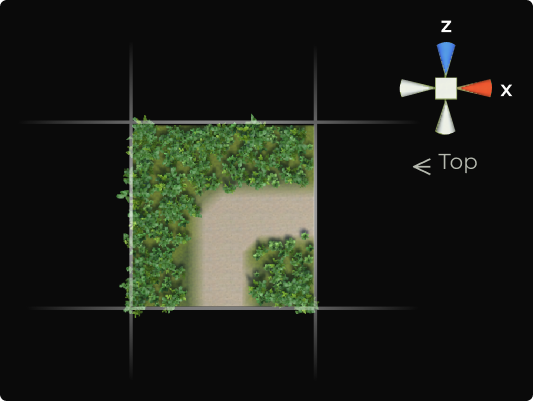
Prefab’s considerations:
- The visible part of the plain must be in the positive Y direction.
- Position is recommended to be zero in the X, Y, and Z axis. Otherwise, it will be generated in the scene in its corresponding position.
- Dimensions or sizes of all tiles must be the same, if not, when generating the level there will appear problems with overslap or empty spaces
- Pivot must be at the center of the model. (In it's X and Z axis)
Interior Layer Bundles
The elements of this layer consist mainly of floors, doors, walls and corners.
Prefab’s considerations:
- It is recommended for their position to be zero in the plains X, Y, and Z. If not, they will be generated in the scene in their corresponding position.
- The dimensions or sizes, of all elements must be the same. If a same group of tiles has different dimensions, there will be overlap and/or empty spaces between tiles when generating the level in the scene.
- The directions and pivots will depend on the type of tile, for example:
Population Layer Bundles
Population is basically everything related to extra elements or props in the scenario; Decoration, enemies, npc’s, items, etc.
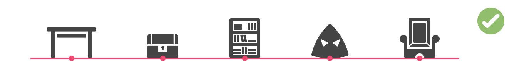
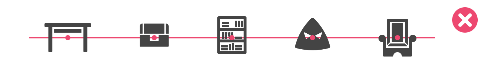
Prefab’s considerations:
- Position is recommended to be zero in the plains X, Y, and Z. If not, it will be generated in the scene in its corresponding position.
- The dimensions or sizes of all elements must be the same. If a same group of tiles has different dimensions, there will be overlap and/or empty spaces between tiles when generating the level in the scene.
- The direction of all elements must be pointing at the same plain, either at the X or Z axis.
- Pivots are recommended to be all at the inferior center (0, 0, 0), as shown in the image.
Note
You can have more than one layer of the same type in a level, this may be useful in order to keep some assets or Main Bundles in its own layer.
For example: Having multiple population layers in order to separate foliage or decoration from interactive objects.
Bundle Configuration
LBS's Tags
Before configuring bundles and their characteristics, the user must create a couple “LBS Tags” depending on their project and assets, this section describes LBS Tags in detail.
LBS Tags are Scriptable Objects containing information about interior, exterior and population bundles. These are the necessary tags that should be in the project before the Bundle’s Characteristics setup. Some tags are intended to be used only in Main Bundles
- LBS Tags for Interior Layer: These Tags come included with LBS, and they are used to categorize interior assets; Wall, Floor, Corner, Door, Window. Interior layer tags are used by the 3D generator and the interior layer assistant.
- LBS Tags for Exterior Layer: Here we can find tags for each different type of terrain, for example; Grass, Water, Snow, Sand, etc. Exterior layer tags are used by the 3D generator and the WFC tool.
- LBS Tags for Population Layer: Population bundles need tags referencing their use case or type of population, for example; decoration, item, enemy, lighting, etc. Population layer tags are used by the Map Elites assistant.
Bundle's Characteristics
In order to generate bundles as users intend, LBS needs extra information about them, we refer to this data as “characteristics”. The characteristics of each bundle will depend mainly on their corresponding layer.
Characteristics can be individually added in the inspector, or in batch with the help of the Bundle Manager Window.
Characteristic’s setup must be manually made for each Bundle, if two or more bundles share the same characteristic’s setup, you can copy and paste each characteristic through Unity’s inspector.
List of Bundle’s Characteristics
Here is a list of all Bundle’s characteristics with their corresponding layer, some characteristics are designed to be used only in Main Bundles
General Characteristics
- LBS Tags Characteristic: This characteristic holds a LBS tag, use it to add a tag to any bundle
Characteristics for Main Bundles
- LBS Main Interior Bundle: Use this characteristic so LBS can recognize your bundle as a Main Interior Bundle
- LBS Main Exterior Bundle: Use this characteristic so LBS can recognize your bundle as a Main Exterior Bundle
- LBS Main Population Bundle: Use this characteristic so LBS can recognize your bundle as a Main Population Bundle
Characteristics for Exterior layer Bundles
- LBS Direction: Indicates the type of terrain associated to each direction of the asset by adding a LBSTag in each edge (Edge-based exterior layer) or corner (Vertex-based exterior layer).
- LBS Terrain Connection Grid [Only for Main Exterior Bundle]: It is used to indicate valid grid patterns
- LBS Directioned Group [Only for Main Exterior Bundle]: Indicates the spawning probability of each sub bundle with the “LBS Direction” characteristic, it can then be stored as a WFC preset
- WFC Presets Characteristic [Only for Main Exterior Bundle]: Storages different WFCs Presets.
- LBS Navigable Tags [Only for Main Exterior Bundle]: Indicates which “LBSTags” corresponds to navigable terrain, it is used by the Map Elites Assistant.
Bundle Creation
The process of creating bundles based on existing prefab assets can be achieved through two different methods. The Bundle manager window, and Unity's Project window
Bundle Manager
You can access the Bundle Manager window through the LBS main window or Unity’s window menu, in here, you can create new bundles and inspect the existing ones.
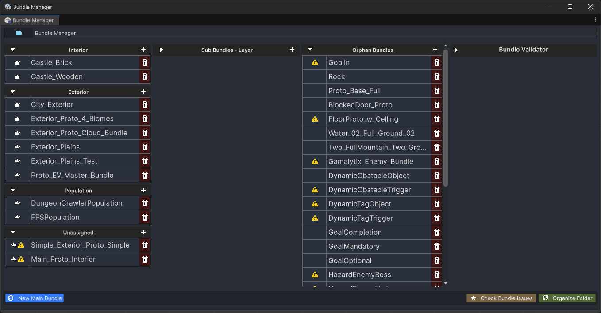
Features
- Bundle Lists:
- List of Main Bundles categorized by layer
- List of Sub Bundles for every Main Bundle
- List of Orphan Bundles
- Bundle Validator: Shows the current errors of selected bundle
- Bulk Bundle Generator: Generates and configures the characteristics of a new Main Bundle and associated sub-bundles by drag & dropping prefab assets or selecting pre existent prefabs. Bundle characteristics need to be manually set-up after this step.
Creating Bundles through the Bundle Manager
Step 1: Layer Selection
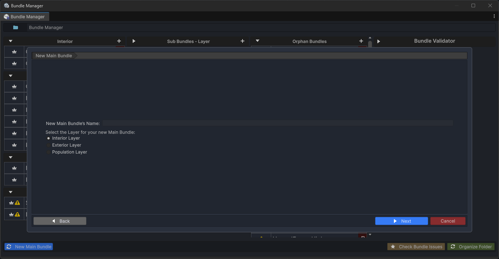
Step 2: Convert Prefab Assets into Bundles
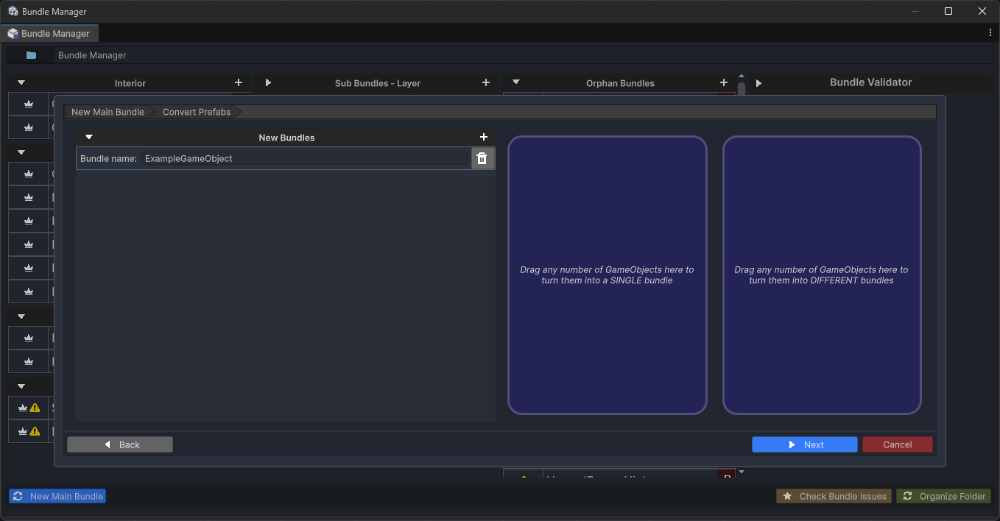
Step 3: Asign pre existing bundles
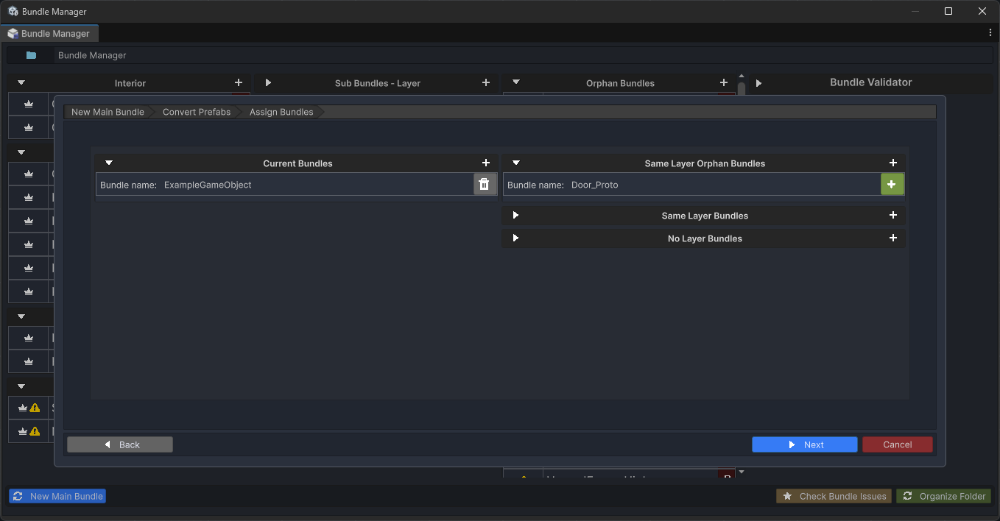
Step 4: Add Characteristics

Step 5: Summary
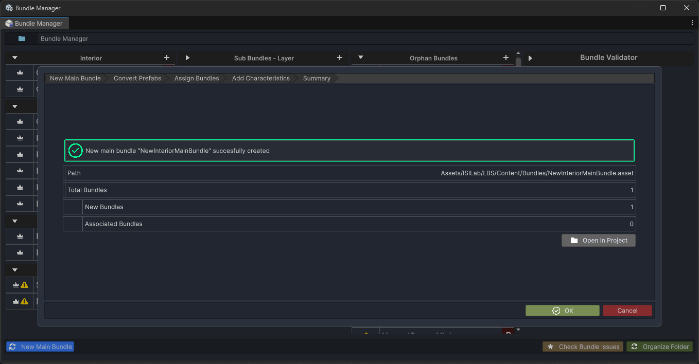
Unity’s Project Window
You can quickly create bundles of any prefab asset(s) directly from the project window, this can be accomplished by first selecting the prefabs assets that will be used for the bundle(s), and then pressing the shortcut "Alt + b" to create one bundle for each asset or "Alt + Shift + b" to get a single bundle with every selected asset.
alternatively, you may do Right Click > Create > ISILab > LBS > Bundle.
Bundle characteristics need to be manually added and set-up after this step, because of this, it is generally recommended to create bundles through the Bundle Manager.
Bundle (Multiple)
“Bundle (Multiple)” (Alt + B) will make multiple bundles, one for each selected prefab asset.
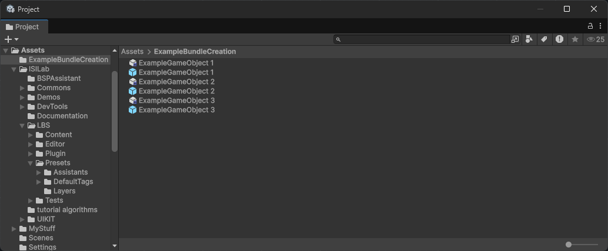
Bundle (Single)
"Bundle (Single)" (Alt + Shift + B) means LBS will make one single bundle with all selected prefab assets
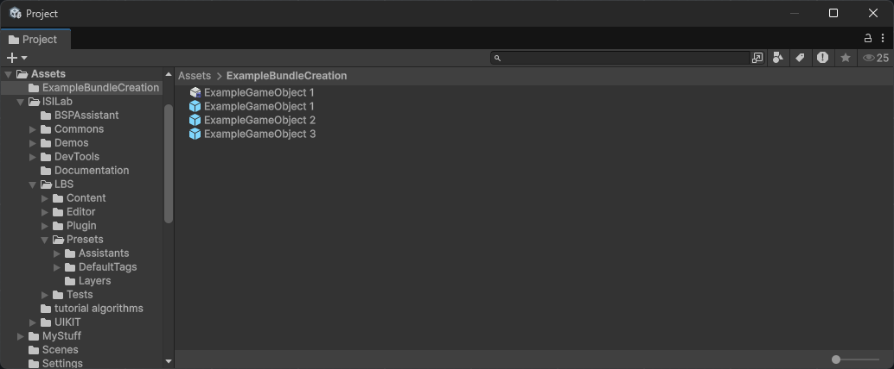
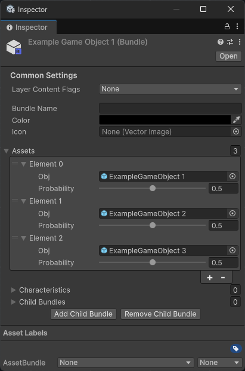